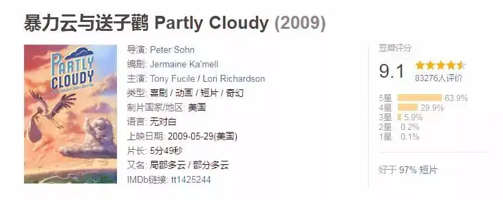
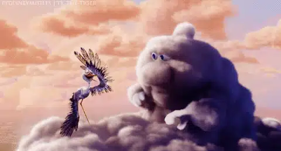
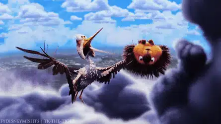
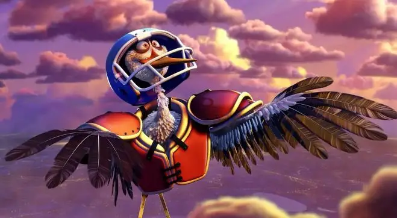
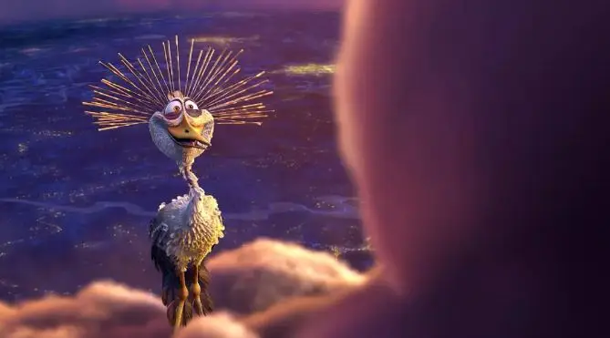

id="js_content" style="">
|《暴力云与送子鹤》
| 一定要提前经历奇妙的5分钟
-01-
2009年，皮克斯的杰作《飞屋环游记》上映，在放映之前，影院会播放皮克斯的一个动画短片《Partly Cloudy》。
直译过来叫《局部阴天》，根据短片内容也译作《暴力云与送子鹳》。
虽然只是一部动画短片，其水准却不亚于《飞屋环游记》，只用了五分钟就为我们讲了一个感人至深的故事。

这是一个充满脑洞的世界。
天空中的云朵像是变魔法一样创造了可爱的宝宝，比如说人类婴儿、小猫、小狗以及其他生物。
而每一朵云彩会有一个可爱的鹳鸟搭档，鹳鸟专门负责将这些宝宝送到他们准父母那里。
△在西方传说中，有一种神奇的送子鸟，据说，送子鸟落在谁家屋顶上造巢，谁家就会喜得贵子，这种神奇的送子鸟叫“鹳”
他们合作默契，乐此不疲地向这个世界输送着新生命和希望。
可是，众多云彩中，有一个名叫古斯的灰色云朵，他创造的动物看上去没有那么可爱，甚至都颇具攻击性。
比如鳄鱼、大角羊、刺猬、鲨鱼。
因此，他的鹳鸟伙伴佩克就比较倒霉了，不是被咬，就是被撞，经常遍体鳞伤。
古斯也很心疼佩克，总是一把把佩克拥入怀中，佩克也总是尴尬、无奈又不失真诚地笑着。


一次，当佩克看到古斯马上要创造出一个鲨鱼时，他害怕地飞走到另一个云团中。
看着自己的搭档离自己而去，古斯愤怒地发起了雷电，接着又开始哭泣起来，从他身上下起了倾盆大雨。
没想到，佩克又飞了回来。
原来，佩克为了保护自己只是去另一个云朵那里拿了一身装备：橄榄球头盔和肩垫。

看到可爱的佩克，古斯既感动又心疼，立马将他紧紧拥入怀中。
古斯重新振作起来，他创造了一个会发电的鳗鱼让佩克运送。
尽管有了全副武装，佩克还是被鳗鱼电的四处尖叫。
暖红色的天空里，不离不弃的爱和陪伴温暖了所有人的心！
-02-
古斯很异类、很不可爱，但是佩克没有因为门不当户不对，就抛弃了他。
这最让我们感动。
在现实中，和这种关系最接近的是父母对孩子的爱。
父母不会因为你不听话就抛弃你，也不会因为你没有别人能赚钱就嫌弃你。
甚至有些孩子天生残疾，父母依旧不会把他们抛弃。
在父母面前，孩子不必装，不必逞强，只需要做真实的自己。
父母这样没有条件的爱给了孩子最大的安全感和感动。
想一下，究竟是什么可以让两个原本很自私的人竟能够为了孩子有如此大的耐心？
是什么赋予了父母之爱的能力和勇气？
答案也许很简单：因为他是我的孩子。
是血缘让父母和孩子产生了一种说不清道不明的契约关系。
仅仅因为他是我的孩子，所以不论他是美丽还是丑陋，健康还是疾病，聪明还是痴傻，父母都不会离开自己的孩子。
不论孩子的成长多么缓慢，甚至比乌龟都慢，父母总是对孩子心存盼望。
就是在别人看来微不足道的一点改变，也能让父母欢呼雀跃。

在人与人的关系中，最稳固的就是契约关系里的爱。
因此，两个人一旦陷入爱河，一定会彼此许下山盟海誓。
因为那是一个人最持久、最生生不息、最有生命力的爱。
可惜，在现代社会中，这种盟约之爱逐渐被人摒弃。
两人在一起，大家看的是房子，看的是钱，看的是门当户对。
付出之前早已计算好了回报，付出一分就要收获一分，甚至期望还要有利息。
岂不知，这种精致的利己和势力让现代人越来越没安全感。
按照所谓的门当户对。
你现在是穷小子，你娶了一个愿意和你同甘共苦的女孩后，有一天，你成为了富豪，那个女孩已经不匹配你的身价，所以你要抛弃原配、另觅新欢。
你的每一次精神上、物质上的升级是不是都意味着要要换一个和你匹配的人。
当你像比较商品一样比较着另一个人的时候，你已经侮辱了作为人的尊严，你让人伤心，也让自己活的很累。
这种高度理性的盘算让现代人充满了冷漠和伤害。
所以，越来越多的人在豪宅中孤枕难眠，越来越多的人四处留情、放纵情欲，心里却非常孤独。
所以，我们会被这个小短片感动，它让我们看到人们真正需要的正是那种不离不弃的爱。
伟大的永远不是你有一百个情人，而是你对一个人忠贞！
-02-
契约不仅仅对个体关系至关重要，对于一个社会、一个国家也意义非凡。
甚至是立国之本。
做生意需要合同，要不然没有办法合作，缺斤少两、以次充好都是有违商业道德的行为。
政治上也一样，人民当家做主，这是人民和政府之间的约定。
人民纳税养政府，政府让人民看不起病、吃“营养”奶粉、打“有效”一秒，那就必定失去民心。
大国关系也是一样，加群时许下诺言，占进了便宜却不兑现诺言，那就应该被讨伐，应该被抽巴掌，任何洗白都是更大的无耻。
因此，一个社会、一个国家没有契约精神，就和地狱没有区别。
-03-
从个人到国家。
现在我们必须要再次回到个人上，因为一个国家是否有契约精神还是要落实到个体身上。
想一下，契约精神这么重要，那什么是契约的根基。
在中国，血缘是最稳健的根基。
但是血缘之下的“家天下”难以打破“你家”与“我家”的壁垒，难以形成公共契约意识。
所以中国人很难爱惜公共资源。
随地扔垃圾、掠夺公共资源为自己所用的现象随处可见。
就是美国教堂发放的救济粮，一些海外华侨老人明明不需要，也不会放过这样贪便宜的好机会。
“自扫门前雪”、“那是别人家事”的观念深入骨髓，所以我们很难形成合力，去关注公共事件，比如说空气污染、贩卖人口等现象。
如今城市化、商业化不断推进，基于血缘关系的成员分散在不同地域。
这也在冲谈着中国传统的家族之情，所以现在中国的传统节日会越来越淡，越来越没意思。
因为“每逢佳节倍思亲”，这些节日都是基于血缘的家族团聚。
所以，现代文明很难在中国产生，而是出现在西方国家。
西方的契约不是来自于血缘，也不是来自于地域，而是来自于信仰。
圣经分为旧约和新约，记述了上帝与人类所立的约定。
不论日耳曼人还是不列颠人，大家都因为有共同的信仰，与上帝有共同的约得以互相理解和信任。
这种超越民族、血缘、地域、国家的信仰之约成为了西方经济文明、政治文明的重要伦理基础。
因此，对于今天的中国，我们需要经济发展，需要政治民主，更需要理解这种奇妙的上帝之约。
它充满了恩典和盼望：
上帝与人类在伊甸园立约，人类违背了约定，而被驱赶出伊甸园，活在罪恶之中，与上帝永久隔绝。
但是上帝仍然眷顾人类，与以摩西、亚伯拉罕、挪亚等人为代表和人类立约，并启示将有一位弥赛亚会将人类从劳苦重担和罪恶中拯救出来。
这是旧约。
作为弥撒亚的耶稣为了我们承受了上帝本该降临在人类头上的震怒，他在十字架上被钉死，流下的血成为上帝与人类立约的证明。
只要跟随耶稣，便可以重新与上帝建立关系。
这是新约。
只有拥有真实的信仰，只有相信耶稣。
我们才能理解《独立宣言》：
我们认为下面这些真理是不言而喻的：造物者创造了平等的个人，并赋予他们若干不可剥夺的权利，其中包括生命权、自由权和追求幸福的权利......
这是我们理解并走入现代文明的钥匙！
关注并回复：暴力云
获取高清资源
这里没有挑逗你眼目情欲的小鲜肉
也没有挑动你肉体情欲的段子
更没有膨胀你今生骄傲的鸡血
我们只在乎那些最质朴真诚的作品
在那里我们才能恢复真正的想象力
我们也坚信这才是我们真正需要的

ID:Six_hundred_hits
长按二维码，一键关注
【六百击】
-END-
电影评论
尽情分享朋友圈

苹果打赏通道
小提示：文末广告是腾讯配送广告，内容与本号无关，但您的每次点击（无需反复点）都会给平台带来几毛收益，欢迎您点击支持六百击。